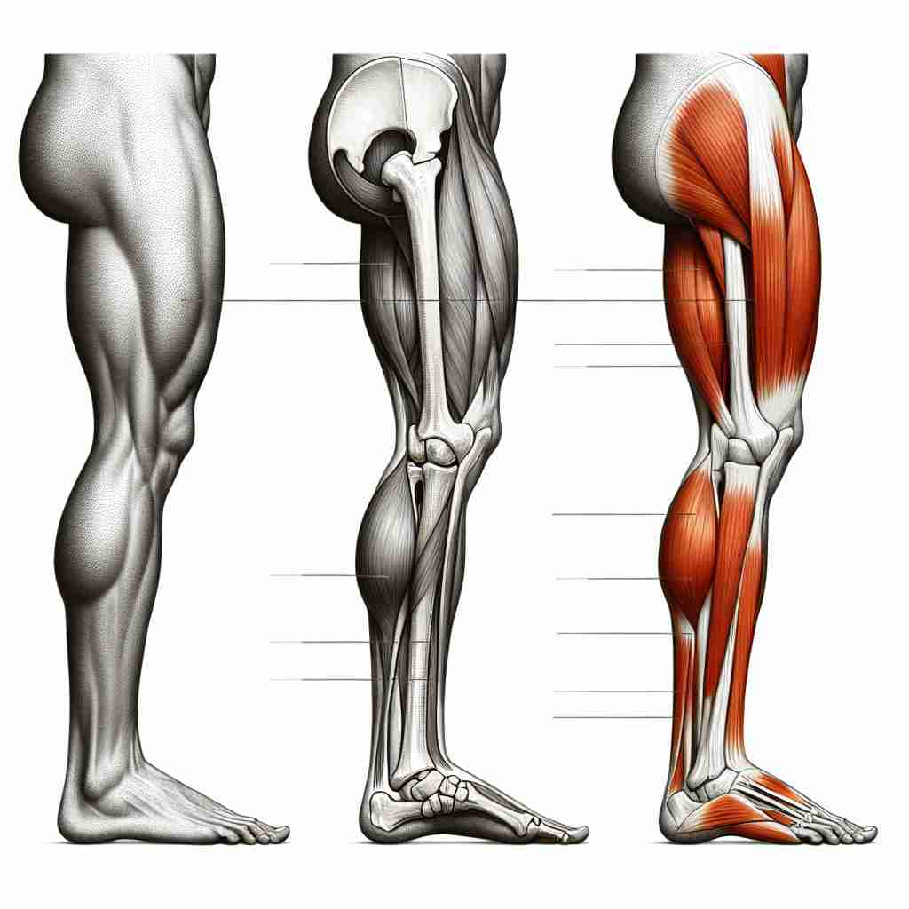

💬 Before the race, the athletes need to stretch their legs.

💬 The dog stands on its back legs and raises its front leg.
💬 The child's leg is visible as she stands next to the adult.

💬 She exercises to have a strong leg for running.
🔈 [leg]
🗝️ n. a long body part that connects the foot to the rest of the body
🖼️ 在一个阳光明媚的公园里，小女孩正在草地上跳跃。她的腿灵活地摆动着，连接着双脚和身体，帮助她轻松自在地在阳光下玩耍。这展示了'leg'作为身体部位的含义。
🔍 想象一下人或动物的腿，它是支撑身体、帮助移动的重要部位。这个核心概念延伸到了衣物、家具的支撑部分，以及旅程的阶段和运动中的快速移动。通过联想腿的形状和功能，你可以更容易理解和记忆'leg'的多重含义。
💬 Before the race, the athletes need to stretch their legs.
💬 The dog stands on its back legs and raises its front leg.
💬 The child's leg is visible as she stands next to the adult.
💬 She exercises to have a strong leg for running.
🌳 单词 "leg" 是一个基本词，没有前缀或后缀，来源于古英语 "leg"，指的是身体的下肢部分。
💡 记忆 "leg" 可以通过联想它作为身体的一部分，帮助行走和站立，与动作相关联来记忆。同时，由于相关词汇常与法律有关，可以将其与秩序和规则联想，帮助记忆与理解。
🗝️ n. a part of a piece of clothing that covers the leg
🖼️ 在一个时尚的服装店中，顾客挑选了一条新的牛仔裤。他用手感受裤腿的布料，确保它柔软舒适，刚好覆盖住他的腿。这形象地展示了'leg'作为服装的一部分。
💬 The legs of these jeans are too short for me.
❓ 形状和功能类似于人体的腿
🗝️ n. a support that holds something up
🖼️ 在一个舒适的客厅里，一只稳固的木桌立在中央。桌子的每条桌腿都坚实可靠，支撑着桌面上的物品。这描绘了'leg'作为支撑物的用法。
💬 This table has four wooden legs.
❓ 形状和功能类似于动物腿部支撑身体
🗝️ n. a section of a journey or race
🖼️ 在一场激烈的接力赛中，选手们在赛道上飞奔。每个人完成自己的一段赛程后，将接力棒交给队友。每一段赛程都被称为一条'leg'，体现了'leg'在旅程或比赛中的含义。
💬 We're now on the final leg of our trip around Europe.
❓ 比喻旅程的一个阶段，如同迈出的一步
🗝️ v. to move quickly using your legs
🖼️ 在一场屋檐下的雨中，一个男孩正快速奔跑。他用尽全力，飞快地移动双腿，冲向家的方向。这描述了'leg'作为快速移动的动作。
💬 We had to leg it to catch the last bus.
❓ 使用腿部进行快速移动
🗝️ n. a part of a game of cricket
🖼️ 在一个热闹的板球比赛中，观众聚精会神地看着场上局势。投球手快速地将球抛向击球手，比赛进入了关键的'leg'阶段，这一部分决定了比赛的胜负。这展示了'leg'在板球比赛中的特定用法。
💬 The ball pitched on the leg side.
❓ 源于板球场地的形状类似于人腿